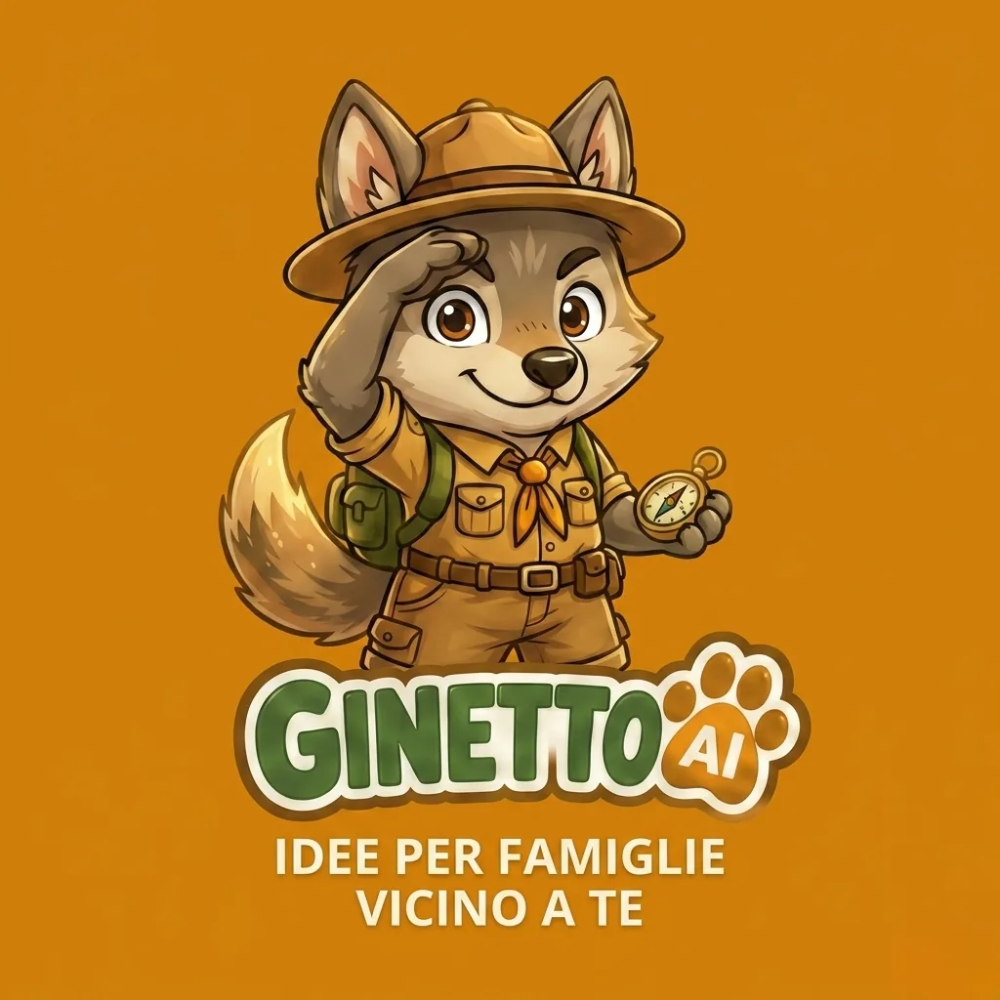
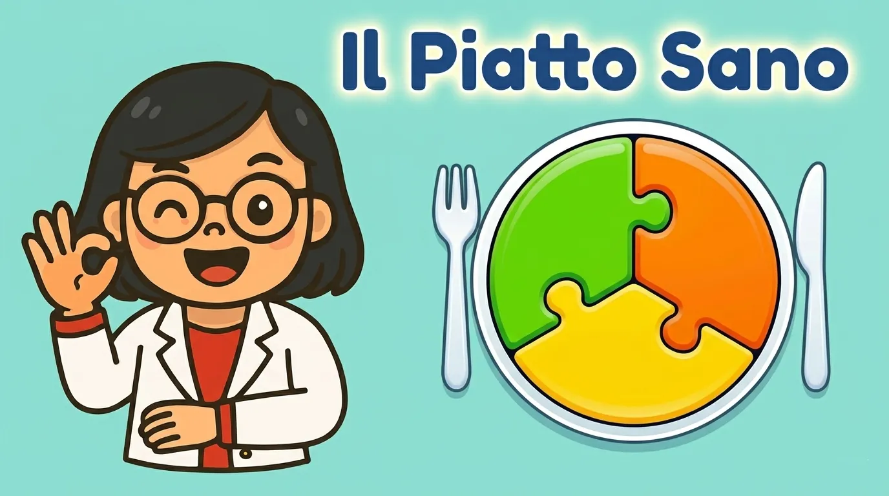

Dove andiamo
oggi papi?
La guida delle famiglie di Alessandria, Asti e Cuneo per uscite, alimentazione sana e avventure quotidiane con i figli. Perché ogni giorno può essere una piccola grande scoperta.
Cosa trovi su DAOP
Eventi con una data, luoghi che ci sono sempre, corsi con l'iscrizione: modi diversi di stare nel tempo, ognuno con la sua pagina.
Ginetto, la tua guida AI per famiglie
Il lupetto esploratore di DAOP: gli chiedi cosa fare con i bambini e ti risponde con gli eventi e i circa 900 posti scelti a mano tra Alessandria, Asti e Cuneo. Gratis, senza registrazione.

Il cuore della community
«Dove andiamo oggi papi?» è la domanda di mio figlio che ha dato vita a tutto. Dal 2023 DAOP è un'associazione di famiglie: ogni provincia ha il suo curatore, che sceglie e verifica gli eventi uno per uno.
Gli altri progetti di DAOP

Per scuole e comuniIl Piatto SanoEducazione alimentare in classe per i bambini dai 6 ai 13 anni, con la nutrizionista e un gioco su LIM. Da leggere insiemeI libriGinetto l'Esploratore, i libri che si leggono camminando per il paese, e gli albi illustrati. Scritte da professionisteLe rubricheAlimentazione con la nutrizionista Serafina Cardaci, bonus e detrazioni con la commercialista Stefania Eligi.Parla a oltre 7.000 famiglie nelle province di AL, AT e CN
Post sponsorizzati, una menzione su Ginetto AI, la presenza sul sito o il co-marketing su un evento locale. Ogni accordo è su misura, niente pacchetti preconfezionati.
La community è qui
Ogni giorno idee e appuntamenti per le famiglie di Alessandria, Asti e Cuneo.
info@daop.it